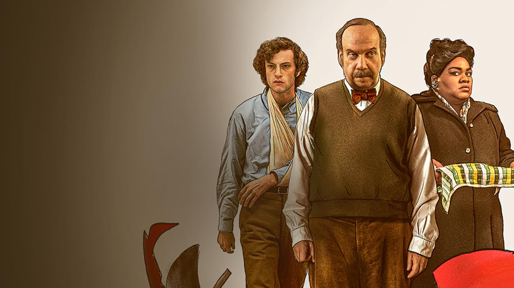

Bradley Charles Cooper es un actor, actor de voz, director, productor, guionista, cantante y compositor estadounidense. Inspirado por su padre, comenzó a interesarse por la actuación a temprana edad
Más InformaciónColman Jason Domingo es un actor, director de escena y dramaturgo estadounidense, más conocido por su papel de Victor Strand en la serie Fear The Walking Dead, de AMC.
Más InformaciónPaul Edward Valentine Giamatti es un actor y comediante estadounidense. Comenzó su carrera como actor secundario durante los años 1990 en producciones como Private Parts.
Más InformaciónAnnette Carol Bening es una actriz estadounidense, nominada cuatro veces a los Premios Óscar, y ganadora de dos Globos de Oro, un Premio Bafta, y dos Premios del Sindicato de Actores.
Más InformaciónLily Gladstone es una actriz estadounidense. Criado en la reserva Blackfeet en Browning, Montana y Seattle, Gladstone es de ascendencia Piegan Blackfeet, Nez Perce y europea. Gladstone ha aparecido en episodios de Room 104 de HBO y Reservation Dogs de FX.
Más InformaciónCarey Hannah Mulligan es una actriz británica nominada, entre otros, a los Premios Óscar, SAG, Globo de Oro y BAFTA. Debutó en el cine interpretando a Kitty Bennet en Pride and Prejudice, adaptación de 2005 de la novela homónima de Jane Austen
Más Información